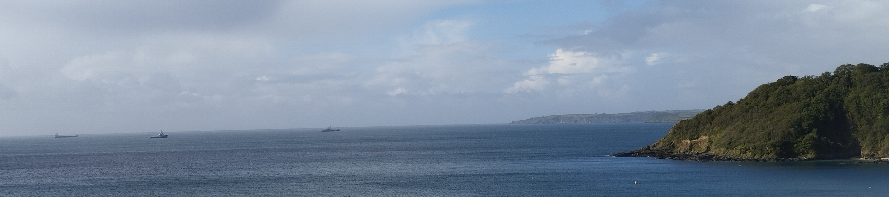
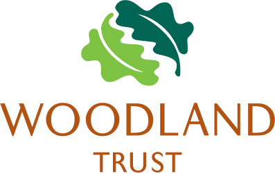
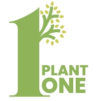
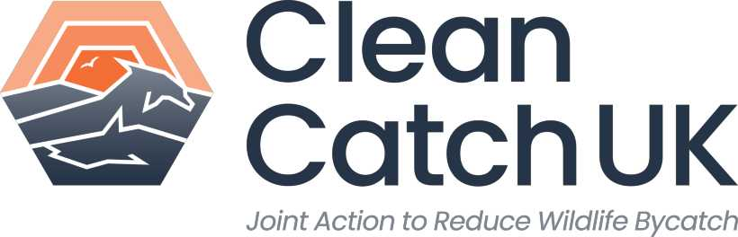
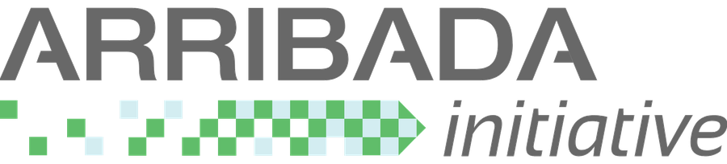
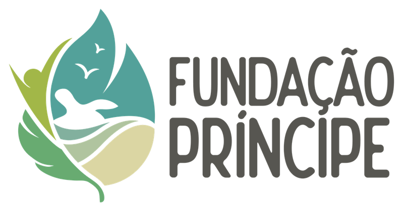
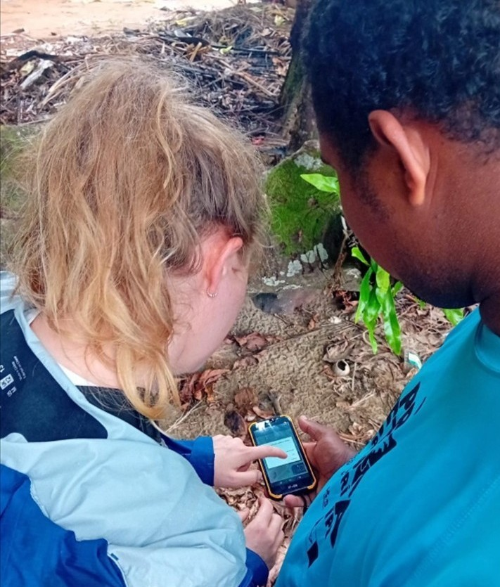
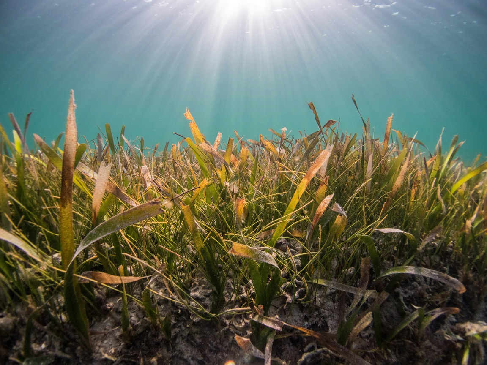

How we help
Research. Ecological and social research.
Analysis. GIS mapping, data analysis and evidence reviews.
Support. Grant writing, programme development, capacity building and more.

At Apex Science & Conservation, we provide flexible research and consultancy support for organisations working to understand, protect and restore nature. We bring rigorous science, practical capacity and fresh thinking to complex challenges spanning land, ocean and people.





What we do
We design and deliver research, make sense of evidence and help move nature-focused work forward.
Research. Ecological and social research.
Analysis. GIS mapping, data analysis and evidence reviews.
Support. Grant writing, programme development, capacity building and more.
NGOs. Conservation and environmental organisations.
Public bodies. Government agencies and delivery partners.
Research teams. Groups working across environmental research and international development.
Rigorous. Experienced researchers delivering the work.
Flexible. Support matched to fit your needs and budget.
Thoughtful. Careful collaborators who are easy to work with.



50+
Published across ecology, conservation, pollinators, road verges, marine plastic pollution, and people’s experiences and behaviours relating to nature.
4,000+
A track record of rigorous, peer-reviewed science, alongside reports and applied outputs that support conservation and nature recovery.
Broad expertise
Experience connecting ecological, social and spatial evidence across land, marine and community-focused projects.
Who we are
Apex is led by Dr Ben Phillips and Dr Emily Duncan, who combine expertise across land-based ecology, marine conservation, social research and data analysis, with a practical, collaborative way of working.

Ben brings expertise in ecology, social research, evidence synthesis and data analysis, particularly relating to land management and nature recovery.
His work has spanned pollinator conservation, road verge management, and research on how people experience, value and act for nature. Most of this work has been delivered in close collaboration with NGOs, government bodies and research partners across the UK.

Emily brings expertise in marine conservation, international project delivery and community-focused research and initiatives.
Her work has focused on plastic pollution, marine megafauna, coastal communities, capacity building, meaningful engagement and strategic project delivery. She also sits on the expert panel for Defra’s Ocean Community Empowerment and Nature Grants Programme and is an Associate of the Ocean Literacy Project.
What our partners say
“Ben produced a ground-breaking evidence review for us which has helped unlock a whole new conversation in the scientific and public spheres.”
“Emily's attention to detail and strong research skills have helped to deliver complex research programmes on time and to budget.”
“Emily's dedication, generosity and ability to share knowledge made our organisation stronger. I cannot recommend Emily highly enough.”
Whether you have a clear brief, an early idea or a question that needs careful scientific input, we would be happy to talk it through.
Get in touch